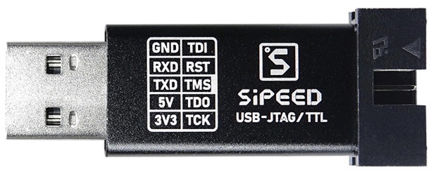
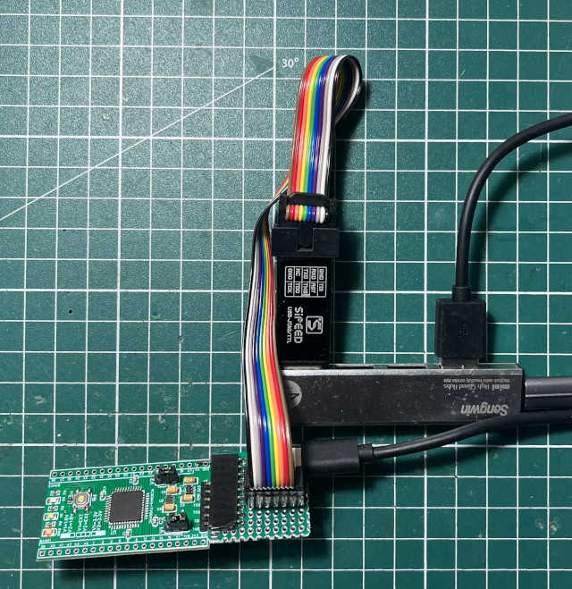

參考資訊：
https://github.com/trabucayre/openFPGALoader
https://saturn.ffzg.hr/rot13/index.cgi/xilinx_coolrunner_ii.pdf?action=pdf_export;page_selected=xilinx_coolrunner_ii
https://web.archive.org/web/20241003224006/https://robertou.com/unofficial-open-source-place-and-route-for-xilinx-coolrunner-ii-cplds.html
使用Sipeed JTAG


$ openFPGALoader -c ft2232 main.jed
empty
Can't read iSerialNumber field from FTDI: considered as empty string
Jtag frequency : requested 6.00MHz -> real 6.00MHz
Open file DONE
Map jed fuses: DONE
Erase Flash: DONE